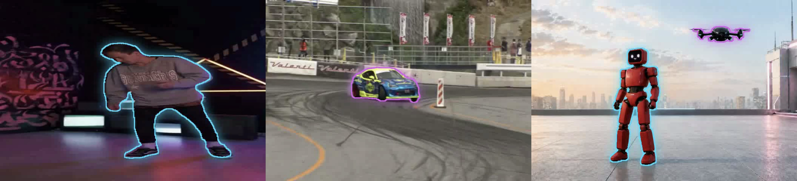
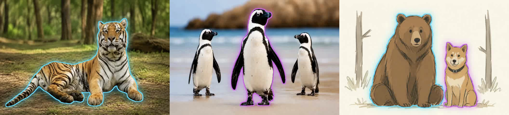
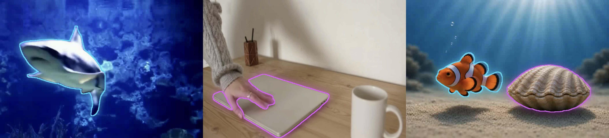
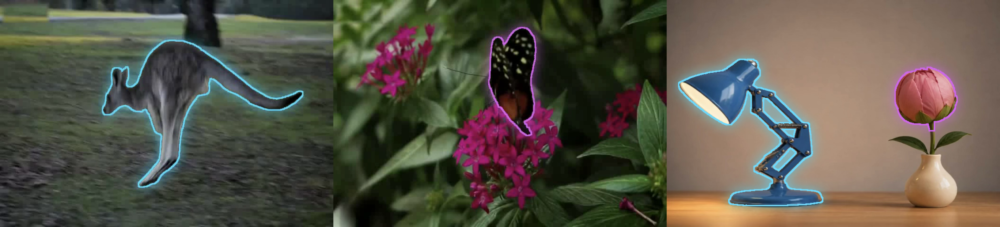

arXiv
arXiv
Localized Action Classification
A2D, kNN over queried actor motion embeddings.
TL;DR: Real-world scenes contain multiple entities moving at once, but most video representations either encode motion globally or localize it by cropping away the context needed to interpret it. We introduce promptable localized motion representations: the encoder sees the full video, while masks query persistent region-specific motion tokens. These tokens support object-level motion transfer, compositional scene control, and localized action classification.
A2D, kNN over queried actor motion embeddings.
Motion selectivity: in-region fidelity minus leakage.
With a full-frame query, the same encoder becomes a global motion representation and remains competitive with dedicated video and motion models.
| Model | SSv2 | Jester | Diving48 | ARID | IARD |
|---|---|---|---|---|---|
| DINOv2 | 10.3 | 23.2 | 9.4 | 14.5 | 76.1 |
| VideoMAE | 7.1 | 20.1 | - | 17.3 | 73.4 |
| V-JEPA2 | 22.2 | 40.8 | 11.1 | 28.0 | 87.6 |
| SemanticMoments DINO | 11.4 | 37.3 | 9.9 | 22.0 | 62.7 |
| SemanticMoments V-JEPA2 | 31.5 | 52.2 | 12.7 | 38.3 | 92.5 |
| DisMo | 24.6 | 69.8 | 20.9 | 55.3 | 92.0 |
| Ours | 26.5 | 72.8 | 17.1 | 55.4 | 93.0 |




Citation
@inproceedings{fundel2026whatmoves,
title = {What Moves? Localized Motion Representations for Compositional Scene Control},
author = {Fundel, Frank and Ben Alaya, Malek and Ressler-Antal, Thomas and Baumann, Stefan Andreas and Ommer, Bjorn},
booktitle = {European Conference on Computer Vision (ECCV)},
year = {2026}
}